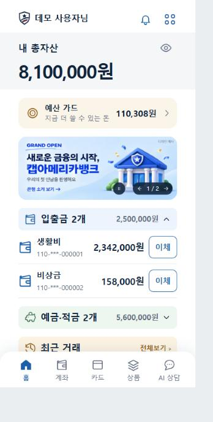
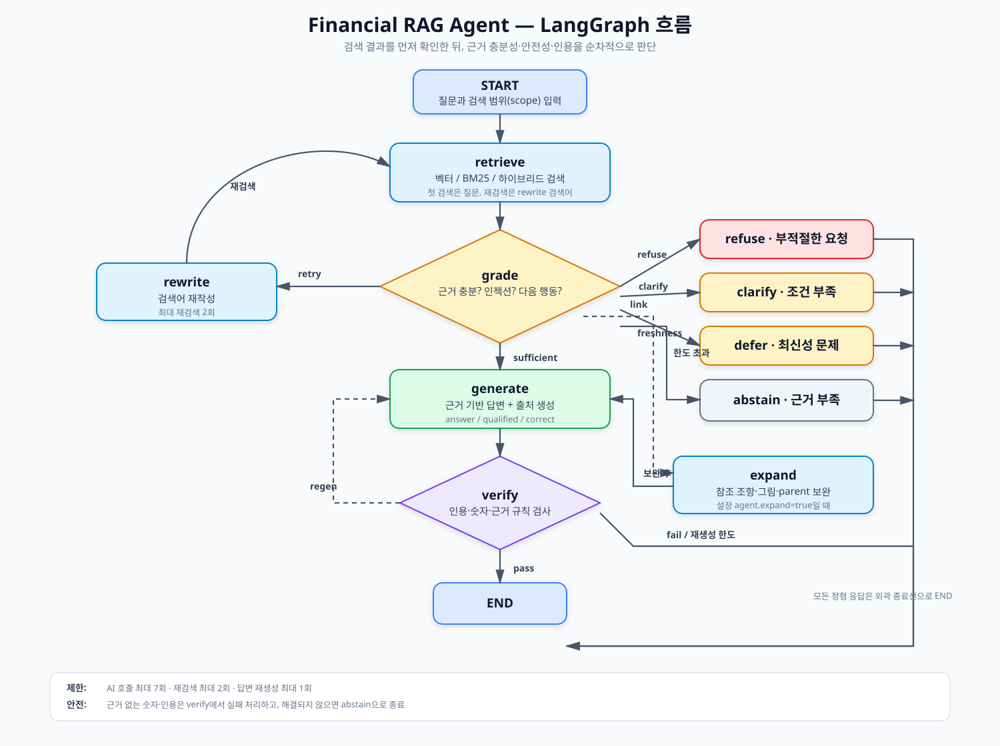

AI ENGINEER · JUNIOR
근거를 찾고,
판단을 연결하는
AI를 만듭니다.
안녕하세요, 개발자 김민석입니다.
금융 문서 RAG부터 업무 에이전트까지,
사용자가 이해하고 결정할 수 있는 서비스를 만듭니다.
만든 프로젝트 보기 ↓GitHub ↗SELECTED WORK / 2026
먼저 보실 대표 프로젝트
구현 · 업무 설계 · 평가, 세 가지 강점을 담았습니다.
01 / SELECTED PROJECT2026.11

실제 구현 화면 · 데모 사용자와 가상 잔액클릭하여 크게 보기 ↗
AI 상담부터 거래 승인까지
캡아메리카뱅크
팀 기획 후 개인 구현·고도화
계좌·카드·이체 기능에 자연어 상담과 상품·약관 RAG를 연결한 가상 은행 앱입니다. AI 도구도 사용자와 같은 권한으로 동작하도록 구성했습니다.
내가 집중한 문제AI의 요청도 사용자 권한 안에서, 거래는 PIN 승인 후 한 번만 실행하도록 만들었습니다.
상담 p50 15.0 → 8.2초동일 질문 전후 비교 · p95 8초 목표는 미달
PythonFastAPIPostgreSQLpgvectorLangGraph
문제와 해결 과정
AI가 재시도한 이체 요청이 중복 실행되거나, 상담 도구가 사용자의 권한을 넘어 돈을 움직이는 상황을 막아야 했습니다. 가짜 모델로 통과한 대화도 실제 Gemini에서는 메시지 형식 차이로 실패했습니다.
잔액과 장부 변경을 실행 함수로 모으고 행 잠금과 요청 번호를 적용했습니다. 이체는 승인 대기까지만 만들며, 거래 PIN 승인 API를 AI 도구에서 제외했습니다.
p95 8초 목표는 전후 비교에서 미달했습니다. RAG 38문항은 짧은 데모 약관 기준이며 실제 은행의 상품·고객 데이터에 대한 성능 검증이 아닙니다. 금융 거래는 가상 데이터로 시연합니다.
02 / SELECTED PROJECT2026.11
 실제 구현 화면 · 대회 가상 기업 실사 시연클릭하여 크게 보기 ↗
실제 구현 화면 · 대회 가상 기업 실사 시연클릭하여 크게 보기 ↗
근거 검토에서 의사결정까지
Kick the Tires
삼일PwC AX 인재전쟁 W08 프로젝트
가상 기업 Celtonic의 인수 실사를 돕는 업무 앱입니다. 매도측의 주장과 원본 근거를 대조하고 가치 재계산, 선행조건, 질의·회신, 이사회 상신까지 연결했습니다.
내가 집중한 문제주장과 원본 근거를 대조하고 재계산한 가치를 선행조건·질의·회신·상신 흐름에 연결했습니다.
근거 → 조건 → 상신가치 계산은 코드로 · 질의 발송과 의결은 모의 처리
PythonFastAPILangGraphSQLitePostgreSQL
문제와 해결 과정
매도측의 조정 EBITDA와 할인율을 그대로 받아들이면 반복 비용을 일회성 비용으로 처리한 주장이 투자 판단에 섞일 수 있었습니다. 숫자만 고쳐서는 부서별 확인과 집행 조건을 관리하기 어려웠습니다.
주장·원본·판정 이력을 분리하고 근거가 맞지 않는 판정은 코드에서 거부하도록 구성했습니다. 재무·공급 기준선 계산도 코드가 수행합니다.
질의 발송·부서 회신·이사회 의결은 모의 처리입니다. Gemini는 보조 검토 이력을 남기며 투자 승인 권한을 갖지 않습니다. 대회 수상·순위는 기재하지 않았습니다.
03 / SELECTED PROJECT2026.10

프로젝트 설계 문서 · LangGraph Agent 흐름도클릭하여 크게 보기 ↗
문서 전처리와 평가 기반 개선
금융 문서 RAG Agent
3인 팀 · PDF 전처리·Agent 구조·설정 비교
금융 PDF 23개를 검색해 파일명·쪽과 함께 답하는 RAG Agent입니다. 팀 공동 기획과 구조 논의를 거쳐 각자의 구현을 PR로 합쳤습니다.
내가 집중한 문제읽기 순서와 표의 근거를 보존하고, 검색 결과를 확인한 뒤 판단하도록 Agent 구조를 바꿨습니다.
과다 거절 0.32 → 0.1240문항 구조 비교 · 자체 평가 기준
PythonLangGraphGeminiChromaBM25
문제와 해결 과정
펼침면과 2단 문서에서 읽기 순서가 섞이고 표·그림 정보가 사라졌습니다. 검색 전에 답변 가능 여부부터 결정하는 Agent는 답할 수 있는 질문까지 거절했습니다.
글자 좌표를 이용해 읽기 순서를 복원하고, 표 손실 판정과 재판독 흐름을 만들었습니다. 전처리 결과를 원본 PDF와 나란히 대조했습니다.
답변 점수는 프로젝트 자체 평가 척도이며 정확도 백분율이 아닙니다. 설정 선택에 사용한 180문항의 결과를 미사용 데이터에 대한 일반화 성능으로 해석하지 않습니다.
RECENT & ONGOING
함께 살펴볼 작업들
2026.11.16 업데이트2026.08 · 개인 프로젝트ReplyGate
정책 문서에 근거한 고객 응대 초안을 만들고, 담당자가 승인한 뒤에만 메일을 발송하는 자동화입니다.
평가 50건에서 승인 가능한 초안 17 → 47건
정책 미제공 초안과 비교 · 실제 운영 승인률 아님
코드와 평가 기록 ↗2026.10 - 11 · 운영 개선Contest Radar
여러 곳의 공모전을 모아 요약하고, 필터·캘린더·북마크로 살펴보는 서비스입니다. 북마크 전용 보기와 Paper 테마를 추가했습니다.
Python · Next.js · Gemini · GitHub Actions
커리어 코치는 로컬 MVP
공모전 찾아보기 ↗2026.10 - 현재 · 개인 참가KIC AI 에이전트 공모전
위탁운용사 실사·모니터링을 주제로 업무 지원 에이전트를 개발하고 있습니다.
대회 진행 중으로 코드와 상세 자료는 비공개입니다.
비공개 프로젝트
01 / EVIDENCE답변 옆에
확인할 근거를.
02 / WORKFLOWAI의 판단을
업무 흐름으로.
03 / VALIDATION바꾼 결과는
같은 기준으로.
ABOUT / HOW I WORK작동하는 이유까지
설명할 수 있도록.
컴퓨터정보보안을 공부하며 노동법 RAG 비서를 만들었습니다. 이후 금융 문서 검색, 은행 업무, 고객 응대 자동화로 경험을 넓혔습니다.
AI가 할 일과 코드가 보장할 일을 정하고, 실패하는 입력을 재현합니다. 설계를 바꿀 때에는 이유와 남은 한계를 함께 기록합니다.
학습 기록 읽기 ↗ 프로젝트에서 사용하는 기술
- Language & Backend
- Python · FastAPI · SQL · PostgreSQL
- Agent & Retrieval
- LangGraph · LangChain · MCP · Gemini
BM25 · Vector DB · RAG 평가 - Product & Delivery
- Next.js · TypeScript · Docker
GitHub Actions · Oracle Cloud - Learning
- EC2 · RDS · pgvector 배포 실습
딥러닝 학습 기록 · C# 게임 코어 실험
멀티캠퍼스 AI 에이전트 엔지니어 트랙
2026.07 - 2027.01 · 수강 중